01
Introduction
Cloud computing has changed how organisations build, deploy and manage applications. Instead of relying only on physical infrastructure, organisations can select managed services according to workload, control and cost requirements. NIST distinguishes Infrastructure as a Service (IaaS), Platform as a Service (PaaS) and Software as a Service (SaaS), together with public, private, community and hybrid deployment models (Mell and Grance, 2011). During this module, I explored these concepts through discussion activities, cloud-native deployment, Infrastructure as Code (IaC), serverless computing and architecture design. The practical activities were useful because they allowed me to compare what a technology promises with the effort required to configure, deploy and operate it.
The main change in my thinking is that cloud architecture is not simply about choosing services. Decisions about scalability, portability, security, cost and operational responsibility are connected, and improving one area can introduce trade-offs elsewhere (Gupta, 2024). This e-Portfolio reflects on selected learning across the module and links those reflections to practical evidence in the appendices.
02
Weekly Reflections
2.1 Unit 1: Cloud Fundamentals and Service Models
Unit 1 revisited IaaS, PaaS and SaaS, but the most useful part for me was comparing AWS and Microsoft Azure in a discussion-board activity (see Appendix A). I compared services, ecosystem fit, flexibility and pricing rather than treating the providers as interchangeable. Kamal et al. (2020) identify differences in provider strengths, while Rajendran et al. (2023) show that deployment suitability depends on workload characteristics.
The exercise reinforced that a larger service catalogue does not automatically make a provider better. AWS can offer broad architectural choice, but that choice can increase configuration complexity. Azure can be attractive to organisations already using Microsoft technologies, but ecosystem integration can also increase dependency on one provider. The lecturer feedback on my post reinforced this balanced approach. My main lesson was that provider and service-model selection should begin with workload and organisational requirements rather than brand preference.
2.2 Unit 5: Cloud Native Technology Part 2
Unit 5 focused on the 12-Factor App methodology and Kubernetes. The 12-Factor principles encouraged me to think about cloud-native design beyond simply packaging an application in a container. Separating configuration from code, treating backing services as attached resources and designing replaceable processes all make applications easier to deploy and scale across environments (Wiggins, 2017).
I applied the Kubernetes part practically by deploying a containerised application called FocusFlow to
Minikube (see Appendix B). The deployment used two replicas, a rolling-update
strategy, CPU and memory requests and limits, and startup, readiness and liveness probes. I then used
kubectl to confirm that the pods, ReplicaSet, Deployment and ClusterIP
service were running correctly. Kubernetes provides orchestration capabilities for containerised
workloads, but the additional scheduling, health-checking and configuration mechanisms also increase
operational complexity (Burns et al., 2016).
This exercise made the trade-off clearer to me. Kubernetes can improve repeatability, health management and scaling, but it should not be introduced merely because containers are being used. The workload must justify the extra platform complexity, and the team must also be able to operate the orchestration layer reliably.
2.3 Unit 6: Hybrid Cloud Solutions (Hybrid, Fog, Edge Computing)
Hybrid, fog and edge computing changed how I think about workload placement. Centralised cloud infrastructure provides scalable compute and storage, but sending all data to a distant cloud region may be inefficient for latency-sensitive systems. Gupta et al. (2017) show how fog computing moves some processing closer to the edge to reduce latency and network congestion. Zheng et al. (2024) similarly demonstrate the value of nearby data placement in vehicular networks.
The important lesson is that edge computing does not replace the cloud. It changes where particular responsibilities are placed. Local processing may improve responsiveness, while the cloud remains useful for aggregation, storage and large-scale analysis. The disadvantage is a more distributed operational model with additional networking, security, monitoring and consistency concerns. I therefore see edge architecture as a performance trade-off, not an automatic upgrade over centralised cloud processing.
2.4 Unit 10: Advanced Cloud Technologies: Serverless Computing
Unit 10 focused on serverless computing through technologies such as AWS Lambda and Azure Functions. Serverless can support event-driven workloads, automatic scaling and consumption-based charging while reducing the amount of infrastructure a development team must manage (Kumar and Mahendrakar, 2019). However, Toosi et al. (2025) identify limitations including cold starts, state management, debugging and security, and Ni et al. (2024) show that security risks still exist across several serverless layers.
I applied the unit practically by defining and deploying a simple AWS Lambda function using AWS CDK (see Appendix F). The CDK deployment created a CloudFormation stack and Lambda resource, and I then invoked the function successfully from the AWS console. This provided evidence across definition, deployment, provisioning and functional testing.
The exercise reinforced that serverless does not mean responsibility-free. AWS manages the underlying servers, but I still had to define runtime settings, permissions, deployment configuration and tests. The operational responsibility is reduced and shifted rather than removed.
2.5 Unit 11: AI and Cloud Computing
The later part of the module also considered the growing role of AI in cloud environments. Cloud platforms make AI capabilities easier to adopt by providing scalable compute, storage and managed AI services. Gupta (2024) discusses the use of AI and machine learning for automation, anomaly detection, predictive analysis and data-driven decision-making.
What became clearer to me is that using AI in the cloud is not simply a matter of selecting an AI service. The quality and usefulness of the result depend on the data available, while privacy, security, cost, monitoring and governance also need to be considered. Managed AI services can reduce the effort required to build infrastructure, but they may also increase dependency on provider-specific platforms, which creates similar portability concerns to other managed cloud services (Opara-Martins, Sahandi and Tian, 2016).
The logistics examples also showed how AI can provide practical value. Nowacki and Wierzbic (2024) demonstrate how operational data can support transport demand planning. However, this value depends on having reliable data and a clearly defined business problem.
The main lesson for me was that AI should be treated as an architectural decision rather than an optional feature added because the technology is available. I would first define the problem, evaluate whether AI provides measurable value, and then consider the data, cost, security and operational implications before adopting it.
03
Skills Development
The module strengthened my practical skills in cloud-native deployment and Infrastructure as Code. In Unit
5, I configured a Kubernetes Deployment with replicas, rolling updates, health probes, security settings and
resource controls, then verified the running workload with kubectl (see
Appendix B). This moved the activity beyond container packaging into deployment
and operational verification.
The Terraform work developed a different skill: describing infrastructure declaratively and validating a proposed AWS environment before deployment (see Appendix D). Unit 10 then provided stronger end-to-end implementation evidence because I used AWS CDK to define a Lambda function, deployed the stack through CloudFormation and tested the function successfully (see Appendix F).
Using Kubernetes, Terraform and CDK in the same module helped me compare their purposes more clearly. Kubernetes manages containerised workloads, Terraform focuses on infrastructure provisioning across providers, while CDK allows infrastructure to be expressed using programming languages and synthesised into provider-specific templates.
I also developed my Infrastructure as Code skills through Azure Resource Manager and Terraform. The Azure design exercise demonstrated how PaaS services and hybrid connectivity could be represented as infrastructure architecture (see Appendix C), while the Terraform activity gave me practical experience of defining, validating and planning AWS infrastructure changes (see Appendix D).
The main skill I developed was not simply using each tool, but deciding what evidence is needed to show that something has been designed, configured, validated, deployed and tested. This distinction is important operationally because a successful configuration check does not prove that a service has been deployed correctly, while a successful deployment does not prove that the workload behaves correctly under real use.
04
Application to Industry
I applied the module to Cloud Route Logistics, a hypothetical logistics company that needs scalable customer services while retaining existing operational systems (see Appendix E). Logistics workloads are a useful example because shipment volumes change, customers expect real-time visibility, and warehouse or transport systems may be expensive or risky to replace.
A hybrid strategy therefore remains appropriate, but reviewing the Cloud Route Logistics design made me recognise that implementation should be phased rather than treated as a single migration. I would begin with relatively independent customer-facing services such as tracking, shipping labels and scheduling while retaining the existing Warehouse Management System (WMS) and Transport Management System (TMS). The next stage would introduce reliable event integration and centralised operational data, with analytics or AI capabilities added only after the underlying data flows and controls were stable. This staged approach is consistent with the AWS Cloud Adoption Framework, which recommends iteratively developing a cloud transformation roadmap while managing organisational and technical risk (Amazon Web Services, 2022).
Governance should also be introduced alongside the technical migration rather than after deployment. For Cloud Route Logistics, this would include clear ownership of cloud services, resource tagging, cost monitoring, identity and access controls, logging and security policies. Each migration stage should also have measurable exit criteria, such as acceptable response time, error rate, availability and cost, before additional workloads are moved. AWS identifies governance, cloud financial management and risk management as important capabilities for coordinating cloud initiatives and reducing transformation-related risk (Amazon Web Services, 2022).
Research also supports the potential value of more advanced cloud capabilities in logistics. Nowacki and Wierzbic (2024) show how AI can support transport demand planning, while Peng et al. (2024) demonstrate how cloud-edge approaches can adapt delivery routes in response to changing conditions. However, these technologies depend on reliable operational data and integration. Introducing AI or edge processing before those foundations are stable could increase complexity without delivering the expected business value.
The main lesson for me is that cloud adoption should be driven by business need, risk and measurable evidence rather than by the availability of new technologies. A technically advanced architecture is not necessarily a better architecture if the organisation cannot operate, govern or justify its additional complexity.
05
Future Learning Goals
My future learning will focus on applying the technologies from this module in practical situations rather than only studying them theoretically.
First, by January 2027, I plan to develop a reusable Terraform module and integrate
terraform fmt, terraform validate and
terraform plan into a CI/CD pipeline. I intend to use this either within an
appropriate professional project or one of my own side projects. I will consider the goal successful when
the same module can be used across at least two environments and passes the automated validation process.
Second, by March 2027, I plan to compare a serverless implementation with a container-based implementation of the same small workload. I can apply this through a side project or, where appropriate, a work-based proof of concept. I will compare deployment effort, response time, operational responsibility, cost and testing requirements. This will extend the practical experience I gained with Kubernetes in Unit 5 and AWS Lambda in Unit 10.
Finally, by June 2027, I plan to develop a small cloud-based AI feature, either as part of a side project or where suitable within my professional work. The aim will be to solve a clearly defined problem rather than simply demonstrate the technology. I will evaluate the implementation using factors such as response quality, latency, cost, privacy and operational complexity.
These goals will allow me to apply the module learning in realistic environments and develop stronger evidence for future architectural decisions.
06
Conclusion
This module strengthened my ability to evaluate cloud technologies rather than treating adoption as automatically beneficial. Across service models, Kubernetes, Infrastructure as Code, edge computing and serverless computing, the same pattern appeared: a technology can reduce one type of complexity while introducing another.
The practical work also improved how I evaluate technical evidence. A diagram demonstrates design, validation demonstrates configuration quality, deployment proves resource creation, and testing provides evidence that the deployed service works.
Going forward, I would begin with workload and business requirements, select the simplest architecture that meets them, and use measurable evidence to justify further complexity. This approach is more sustainable than selecting technologies first and then trying to fit the workload around them.
R
References
Amazon Web Services (2022) AWS Cloud Adoption Framework: Governance Perspective. View publication (opens in a new tab) (Accessed: 18 October 2026).
Amazon Web Services (2026) What are Savings Plans? View publication (opens in a new tab) (Accessed: 7 August 2026).
Burns, B., Grant, B., Oppenheimer, D., Brewer, E. and Wilkes, J. (2016) ‘Borg, Omega, and Kubernetes’, Communications of the ACM, 59(5), pp. 50–57. https://doi.org/10.1145/2890784 (opens in a new tab).
Gupta, D. (2024) The Cloud Computing Journey: Design and deploy resilient and secure multi-cloud systems with practical guidance. Birmingham: Packt Publishing. View publication (opens in a new tab) (Accessed: 16 October 2026).
Gupta, H., Vahid Dastjerdi, A., Ghosh, S.K. and Buyya, R. (2017) ‘iFogSim: A toolkit for modeling and simulation of resource management techniques in the Internet of Things, Edge and Fog computing environments’, Software: Practice and Experience, 47(9), pp. 1275–1296. https://doi.org/10.1002/spe.2509 (opens in a new tab).
Kamal, M.A., Raza, H.W., Alam, M.M. and Su’ud, M.M. (2020) ‘Highlight the features of AWS, GCP and Microsoft Azure that have an impact when choosing a cloud service provider’, International Journal of Recent Technology and Engineering, 8(5), pp. 4124–4132. https://doi.org/10.35940/ijrte.D8573.018520 (opens in a new tab).
Kumar, A. and Mahendrakar, S. (2019) Serverless Integration Design Patterns with Azure: Build powerful cloud solutions that sustain next-generation products. Birmingham: Packt Publishing. View publication (opens in a new tab) (Accessed: 16 October 2026).
Mell, P. and Grance, T. (2011) The NIST Definition of Cloud Computing. NIST Special Publication 800-145. Gaithersburg, MD: National Institute of Standards and Technology. https://doi.org/10.6028/NIST.SP.800-145 (opens in a new tab).
Ni, K., Mondal, S.K., Kabir, H.M.D., Tan, T. and Dai, H-N. (2024) ‘Toward security quantification of serverless computing’, Journal of Cloud Computing, 13, article 140. https://doi.org/10.1186/s13677-024-00703-y (opens in a new tab).
Nowacki, K. and Wierzbic, A. (2024) ‘Utilizing artificial intelligence in transport demand planning for a company providing logistics services in the trade industry’, Procedia Computer Science, 246, pp. 5575–5584. https://doi.org/10.1016/j.procs.2024.09.712 (opens in a new tab).
Opara-Martins, J., Sahandi, R. and Tian, F. (2016) ‘Critical analysis of vendor lock-in and its impact on cloud computing migration: a business perspective’, Journal of Cloud Computing, 5, article 4. https://doi.org/10.1186/s13677-016-0054-z (opens in a new tab).
Peng, G., Wen, Y., Dou, W., Li, T., Xu, X. and Ye, Q. (2024) ‘Edge intelligence empowered delivery route planning for handling changes in uncertain supply chain environment’, Journal of Cloud Computing, 13, article 69. https://doi.org/10.1186/s13677-024-00613-z (opens in a new tab).
Rajendran, P., Maloo, S., Mitra, R., Chanchal, A. and Aburukba, R. (2023) ‘Comparison of cloud-computing providers for deployment of object-detection deep learning models’, Applied Sciences, 13(23), article 12577. https://doi.org/10.3390/app132312577 (opens in a new tab).
Toosi, A.N., Javadi, B., Iosup, A., Smirni, E. and Dustdar, S. (2025) ‘Serverless computing for next-generation application development’, Future Generation Computer Systems, 164, article 107573. https://doi.org/10.1016/j.future.2024.107573 (opens in a new tab).
Wiggins, A. (2017) The Twelve-Factor App. https://12factor.net/ (opens in a new tab) (Accessed: 18 October 2026).
Zheng, Y., Chen, Y., Tan, C., Yang, Y., Shu, C. and Chen, L. (2024) ‘Optimization model for vehicular network data queries in edge environments’, Journal of Cloud Computing, 13, article 145. https://doi.org/10.1186/s13677-024-00705-w (opens in a new tab).
A–G
Appendices
Appendix A
Unit 1 Discussion — Comparing AWS and Microsoft Azure Service Models
This appendix reproduces my Unit 1 discussion-board contribution and the lecturer feedback received. The lecturer salutation has been removed from the feedback for anonymity.
Discussion-board contribution
Amazon Web Services (AWS) and Microsoft Azure are major cloud providers offering Infrastructure as a Service (IaaS), Platform as a Service (PaaS) and serverless computing. Although their core services are comparable, they differ in flexibility, ease of use, pricing and suitability for particular workloads.
AWS provides a broad range of services across compute, storage, databases and application development. Examples include RDS for database service, S3 for object storage and Lambda for serverless computing. This wide service portfolio provides organisations with considerable flexibility when designing cloud architectures. Kamal et al. (2020) identify AWS as particularly strong in infrastructure services, while Azure has strengths in PaaS and integration with Microsoft technologies. However, a wider range of configuration options can also increase complexity for inexperienced users.
Azure provides comparable services including Azure Virtual Machines, Blob Storage and Azure Functions. Its close integration with Microsoft technologies can make it particularly suitable for enterprises already using products such as Windows Server, Microsoft Entra ID and Microsoft 365. Research comparing AWS and Azure also indicates that ease of deployment can depend considerably on the workload rather than one platform being universally easier to use (Rajendran et al., 2023).
Pricing is another important consideration. Both providers offer pay-as-you-go models as well as discounts for predictable workloads. AWS, for example, provides Savings Plans in exchange for commitments to consistent compute usage (Amazon Web Services, 2026). However, direct price comparisons can be difficult because costs vary according to region, resource configuration, workload and usage patterns.
Overall, AWS may be more appropriate where organisations require a broad range of services and architectural flexibility, while Azure may be particularly attractive to organisations already invested in Microsoft's enterprise ecosystem. Therefore, provider selection should be based on specific technical, organisational and financial requirements rather than assuming that one platform is universally superior.
Lecturer feedback
Good work. your comparison is clear because you connect the service models to recognisable examples such as RDS, S3 and Lambda on AWS, and Virtual Machines, Blob Storage and Functions on Azure. I particularly liked your balanced point that AWS's larger service portfolio can improve architectural flexibility but also increase complexity, while Azure's advantage often comes from Microsoft ecosystem fit rather than being universally easier (Kamal et al., 2020; Rajendran et al., 2023). Your pricing paragraph is also sensible, since Savings Plans and other discounts only become meaningful when assessed against region, configuration and workload patterns (Amazon Web Services, 2026).
Appendix B
Unit 5 — Cloud Native Technology Part 2
This appendix provides practical evidence from the Unit 5 Kubernetes activity. A containerised application
named FocusFlow was deployed to a local Kubernetes environment using Minikube and verified using
kubectl.
Kubernetes Deployment configuration
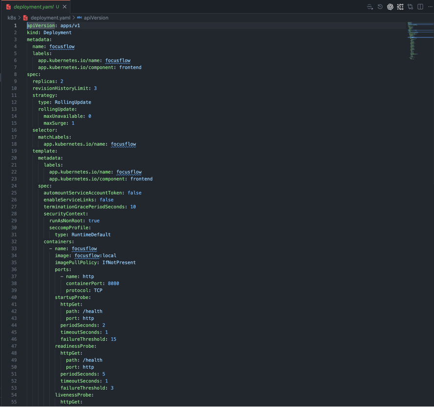
Open full-size FocusFlow Kubernetes Deployment manifest in a new tabKubernetes deployed resources
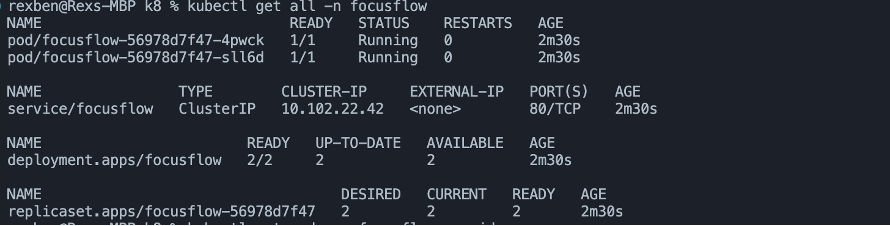
Open full-size FocusFlow deployed resources screenshot in a new tabkubectl output showing two running
pods, the Deployment, ReplicaSet and ClusterIP service in the focusflow
namespace.Kubernetes pod verification
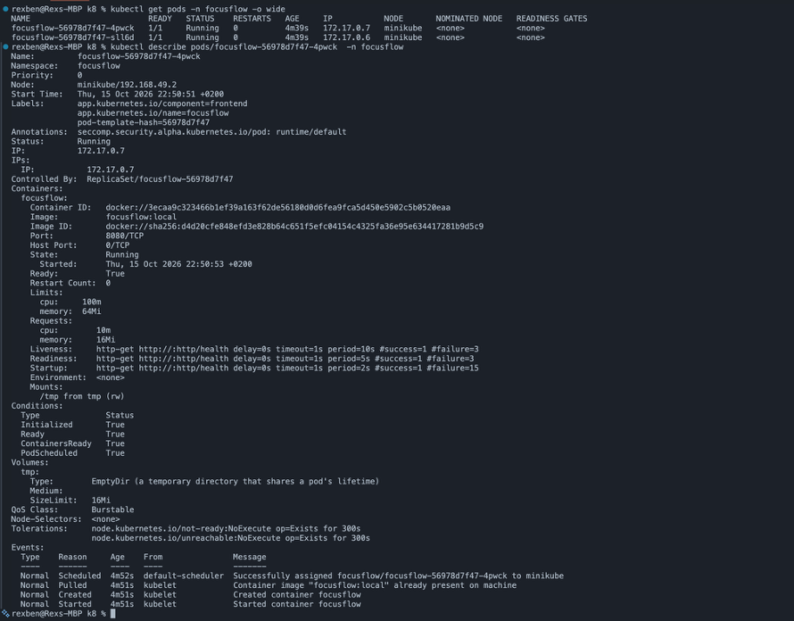
Open full-size FocusFlow pod verification screenshot in a new tabkubectl pod details confirming the
workload is Running and Ready, with configured probes and resource limits.Appendix C
Azure Infrastructure Design
This appendix provides evidence of the Azure infrastructure design completed during the module.
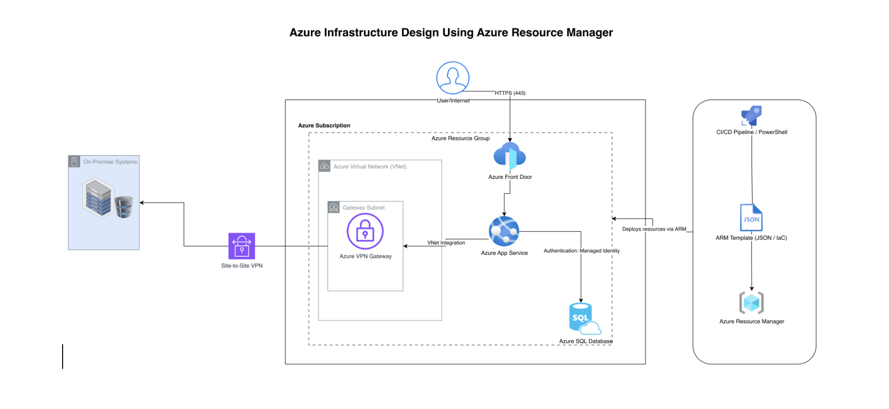
Open full-size Azure infrastructure diagram in a new tabAppendix D
Terraform Infrastructure as Code Evidence
This appendix provides Terraform evidence developed for the logistics architecture exercise. The case
study was later renamed Cloud Route Logistics; the Terraform execution screenshots were produced before
that naming change. The configuration was initialised, validated and planned;
terraform apply was not performed.
Selected Terraform source code
resource "aws_vpc" "main" {
cidr_block = "10.0.0.0/16"
enable_dns_support = true
enable_dns_hostnames = true
}
resource "aws_subnet" "private_a" {
vpc_id = aws_vpc.main.id
cidr_block = "10.0.1.0/24"
availability_zone = "eu-west-1a"
map_public_ip_on_launch = false
}
resource "aws_subnet" "private_b" {
vpc_id = aws_vpc.main.id
cidr_block = "10.0.2.0/24"
availability_zone = "eu-west-1b"
map_public_ip_on_launch = false
}
resource "aws_s3_bucket" "data_lake" {
bucket_prefix = "cloud-route-logistics-data-lake-"
tags = { Name = "Cloud Route Logistics Data Lake" }
}Terraform initialisation
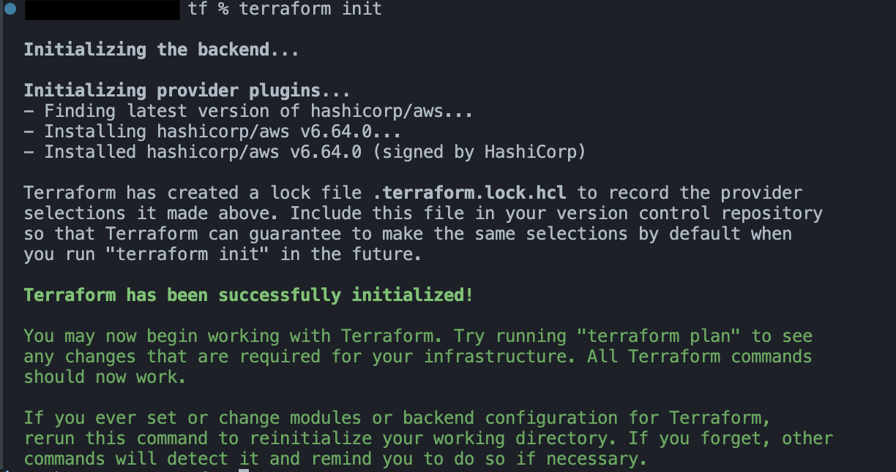
Open full-size Terraform initialisation screenshot in a new tabTerraform validation
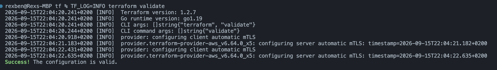
Open full-size Terraform validation screenshot in a new tabTerraform execution plan
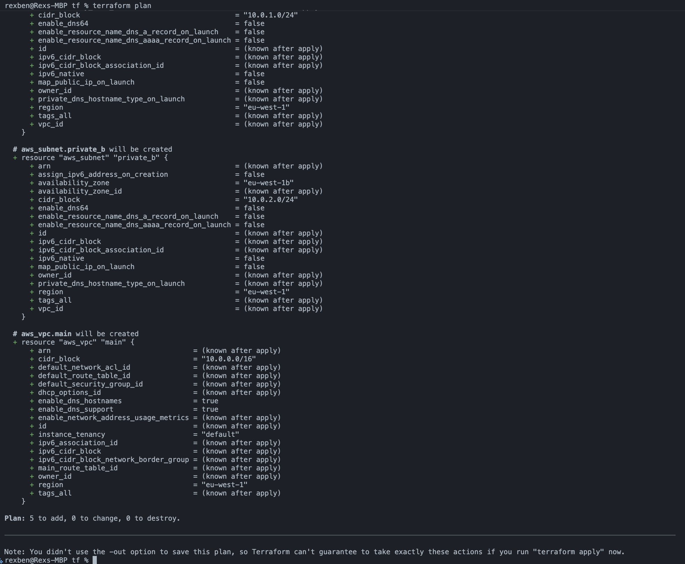
Open full-size Terraform plan image in a new tabAppendix E
Cloud Route Logistics Cloud Architecture
This appendix provides the final architecture developed for the Cloud Route Logistics scenario.
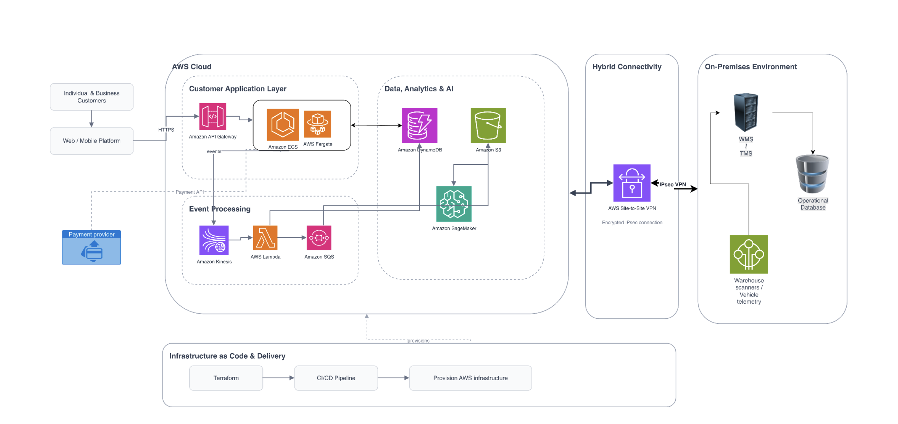
Open full-size Cloud Route Logistics architecture diagram in a new tabAppendix F
Unit 10 — Advanced Cloud Technologies: Serverless Computing
This appendix provides practical implementation evidence from Unit 10. AWS CDK was used to define and deploy a Lambda function, CloudFormation managed the resource creation, and the deployed function was tested successfully.
AWS CDK Lambda configuration
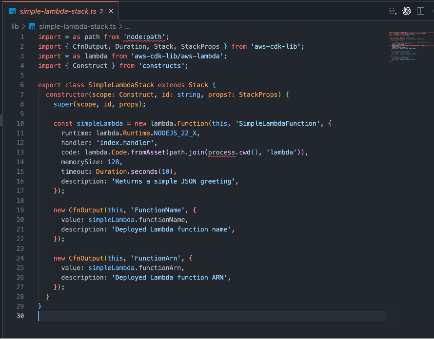
Open full-size AWS CDK Lambda stack screenshot in a new tabSuccessful AWS CDK deployment
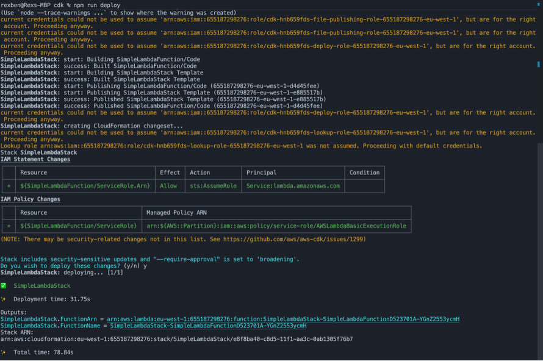
Open full-size successful AWS CDK deployment screenshot in a new tabSimpleLambdaStack, including the generated Lambda function name and
ARN.AWS CloudFormation stack creation
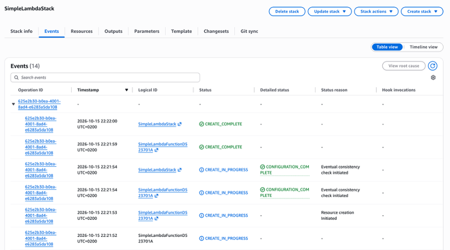
Open full-size CloudFormation stack events screenshot in a new tabCREATE_COMPLETE for the Lambda function and the overall stack.Successful Lambda function test
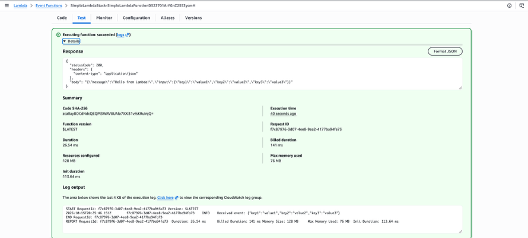
Open full-size successful Lambda function test screenshot in a new tabAppendix G
Live e-Portfolio
An online version of the Cloud Operations and Management e-Portfolio, including supporting evidence and diagrams, is available at rexben001.github.io/cloud-computing.html (opens in a new tab).